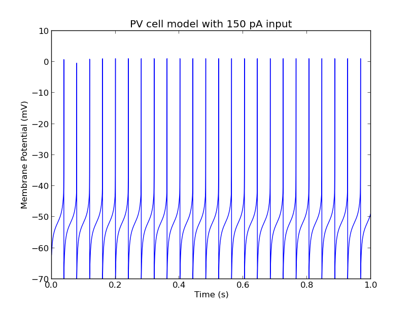

This is the readme for the model associated with the paper: Ferguson KA, Huh CY, Amilhon B, Williams S, Skinner FK (2013) Experimentally constrained CA1 fast-firing parvalbumin-positive interneuron network models exhibit sharp transitions into coherent high frequency rhythms. Front Comput Neurosci 7:144 This model was contributed by F. Skinner. The default CA1 PV+ interneuron model supplied here has an Iapplied current set to 150pA and when run with a command like python PV_model.py (after brian 1.3.1 is installed) will produce a graph like: 